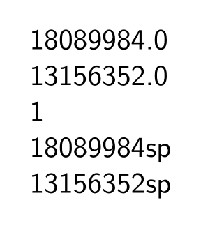

If you’re using ConTeXt for complex layout tasks, you need to calculate with image sizes. Often it makes sense to use Lua functions.
Beware, TeX calculates internally in "scaled points" (sp), 1 sp = 1/65536 pt.
Measures in pure ConTeXt
You can get at a picture’s dimensions with one line of TeX code:
\setupexternalfigures[location=default] % necessary to find pictures in tree \getfiguredimensions[hacker.jpg]
This defines a bunch of variables:

Measures in Lua
There is a way to take them in Lua:
-
\setupexternalfigures[location=default] \setupbodyfont[sans, 20pt] \starttext \startTEXpage[offset=1em] \startluacode local f = figures.getinfo("cow.pdf") context(f.used.width) context.par() context(f.used.height) context.getfiguredimensions({ "cow.pdf" }) context.par() context(context.noffigurepages) context.par() context(context.figurewidth) context.par() context(context.figureheight) \stopluacode \stopTEXpage \stoptext
- 
The figures.getinfo gives just numbers and it has less options. context.getfiguredimensions gives the same outputs than it TeX counterpart.
Calculations in Lua
TEXpt = 65536 -- sp per pt
TEXptpi = 72.27 -- pt per inch
function sp2mm(n)
-- convert sp into mm
return math.floor(n * 35.28 / TEXpt)/100
end
function glue2num(glue)
-- convert TeX glue (e.g. skips) into dimensions(? or numbers)
return glue.width + (glue.stretch * glue.stretch_order) - (glue.shrink * glue.shrink_order)
end
function ImgSize(resolution)
local filename = figures.current().status.fullname -- current image
local pic = img.scan{filename = filename}
local picH = pic.ysize * TEXptpi * TEXpt / resolution -- picture height in sp
local picW = pic.xsize * TEXptpi * TEXpt / resolution -- picture width in sp
context("height=" .. picH .. ",width=" .. picW)
end
Postponing
If you want to place full page images or similar content on distinct pages, try the postponing mechanism:
\definemakeup[fullpage][ page=no, doublesided=no, % headerstate=empty, % footerstate=empty, pagestate=start, ] \startpostponing[pagenumber] \startfullpagemakeup % use \setlayer & friends \stopfullpagemakeup \stoppostponing
The pagenumber argument can be absolute or relative, e.g. 23 or +2. Values like +0 or -1 might fit your usecase.
((WORK IN PROGRESS))